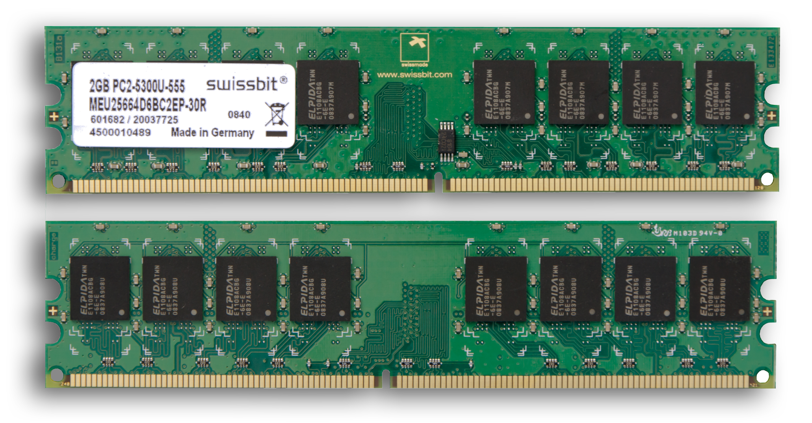
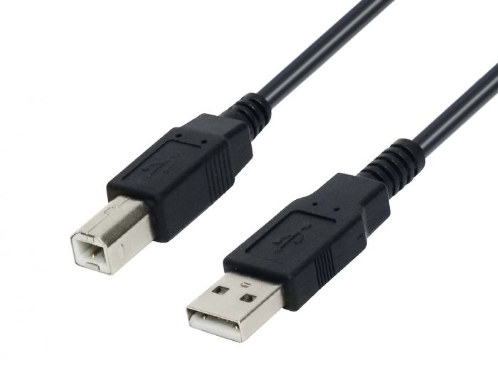
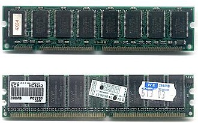
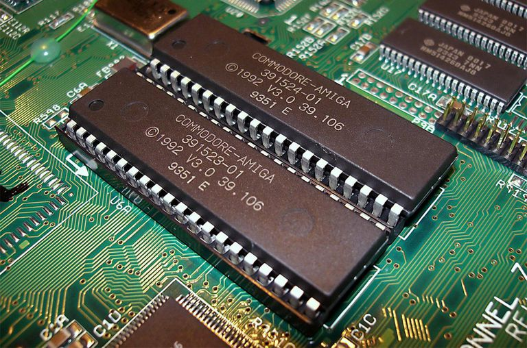
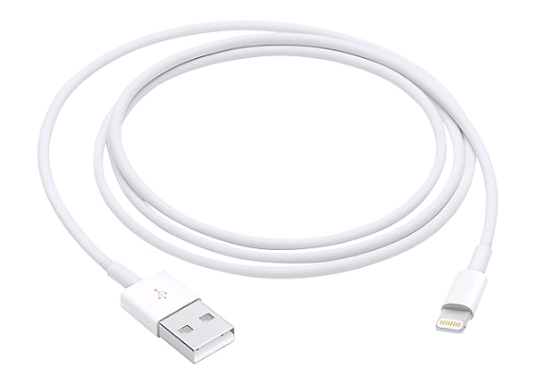
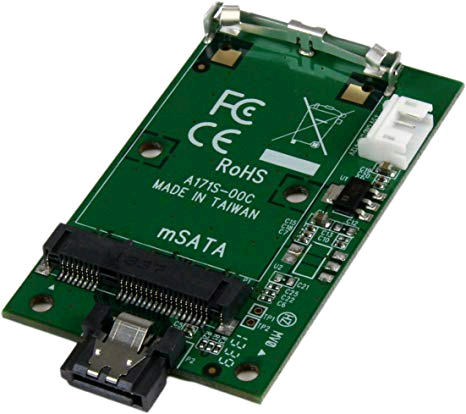
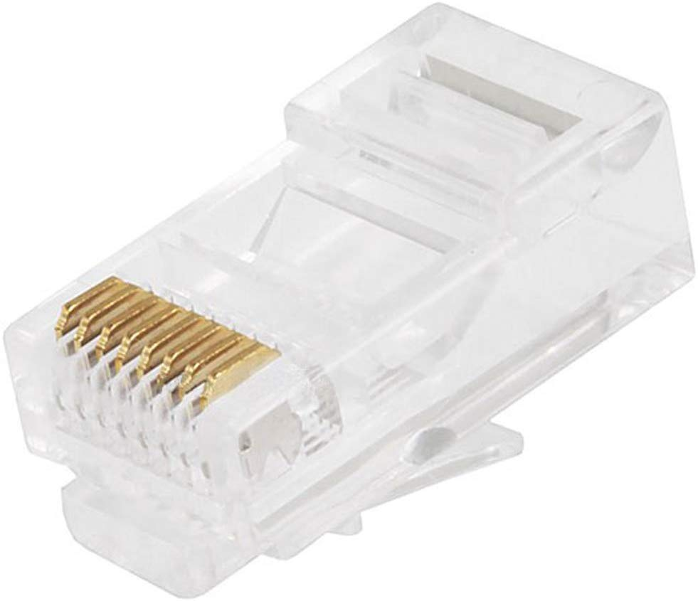
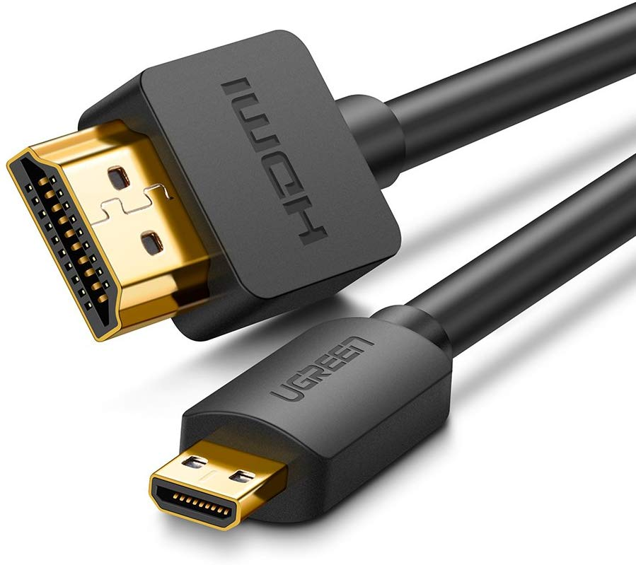
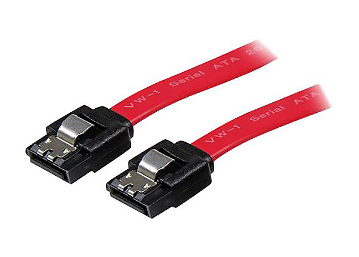
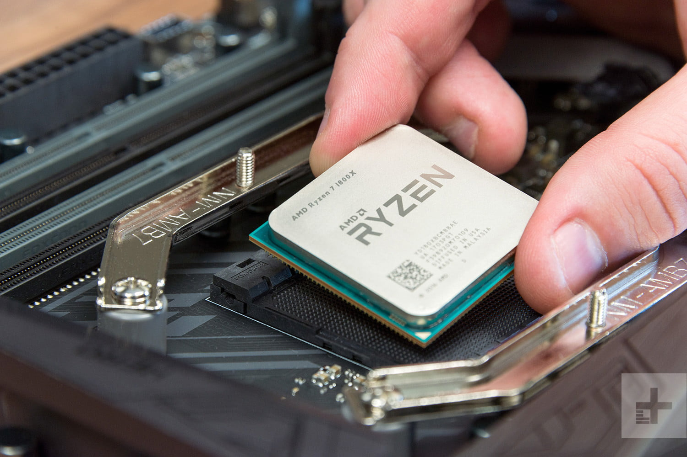

back TEJ Computer Technology Marks: /12
Computer Hardware Assignment #1
- Go to http://www.techterms.com/
- Create a dictionary with 12 computer hardware terms that are new to you
- Use the table below as your template. List your sources (Links) at the end of the document.
- Submit completed template within the google classroom
Template:
Acronym #1 | Phrase #1 | Definition #1 | Image #1 |
GPU | Graphics Processing Unit | The GPU renders images, animations and video for the computer's screen. | 
|
Acronym #2 | Phrase #2 | Definition #2 | Image #2 |
PSU | Power Supply Unit | the component that supplies power to a computer. |  |
Acronym #3 | Phrase #3 | Definition #3 | Image #3 |
CPU | Central Processing Unit | the brains of the computer where most calculations take place. |  |
Acronym #4 | Phrase #4 | Definition #4 | Image #4 |
HDD | Hard Disk Drive | a electrical and mechanical data storage device that uses magnetic storage to store data. |  |
Acronym #5 | Phrase #5 | Definition #5 | Image #5 |
SSD | Solid State Drive | storage device that uses integrated circuit assemblies to store data instead of using more mechanical methods like the HDD (Hard Disk Drive). |  |
Acronym #6 | Phrase #6 | Definition #6 | Image #6 |
MB | Mother Board | a printed circuit board and foundation of a computer, It allocates power and allows communication to and between the CPU, RAM, and all other computer hardware components. |  |
Acronym #7 | Phrase #7 | Definition #7 | Image #7 |
RAM | Random Access Memory | stores the information your computer is actively using so that it can be accessed quickly. The more programs your system is running, the more memory you’ll need. |  |
Acronym #8 | Phrase #8 | Definition #8 | Image #8 |
N/A | Heat Sink | expel heat from a computer component that is a source of heat, like a CPU (Computer Processing Unit) for example. |  |
Acronym #9 | Phrase #9 | Definition #9 | Image #9 |
N/A | System Fan | used to draw cooler air into the case from the outside, expel warm air from inside and move air across a heatsink to cool a particular component. |
|
Acronym #10 | Phrase #10 | Definition #10 | Image #10 |
N/A | Sound Card | provides input and output of audio signals to and from a computer under control of computer programs. |  |
Acronym #11 | Phrase #11 | Definition #11 | Image #11 |
N/A | Tower | a metal chassis that holds all of the computer's components. |  |
Acronym #12 | Phrase #12 | Definition #12 | Image #12 |
CD-ROM Drive | Compact Disk Read Only Memory Drive | CD-ROM is an optical disc that contains audio or software data whose memory is read-only, the CD-ROM Drive is what’s used to read it. |  |
#1 (info): https://www.pcmag.com/encyclopedia/term/43886/gpu
#1 (image): https://store.hp.com/us/en/tech-takes/best-gpu-for-gaming
#2 (info): https://www.webopedia.com/TERM/P/power_supply.html
#2 (image): https://www.cpumedics.com/hewlett-packard-hp-ps-6361-4-365w-power-supply-unit-psu/
#3 (info): https://www.webopedia.com/TERM/C/CPU.html
#3 (image): https://store.hp.com/us/en/tech-takes/how-to-overclock-pc-cpu
#4 (info): http://pages.cs.wisc.edu/~remzi/OSTEP/file-disks.pdf
#4 (image): https://www.backblaze.com/blog/life-and-times-of-a-backblaze-hard-drive/
#5 (info): https://www.zdnet.com/article/solid-state-disk-prices-falling-still-more-costly-than-hard-disks/
#5 (image): https://www.rockpapershotgun.com/2019/11/30/black-friday-ssd-deals/
#6 (info): https://www.computerhope.com/jargon/m/mothboar.htm
#6 (image): https://www.computerhope.com/issues/ch000504.htm
#7 (info): https://www.crucial.com/usa/en/support-what-does-computer-memory-do
#7 (image): https://www.geek.com/tech/geek-basics-what-type-of-ram-do-i-have-in-my-computer-1465999/
#8 (info): http://edge.rit.edu/edge/P07442/public/Heat%20Sink%20Info
#8 (image): https://www.arrow.com/en/research-and-events/articles/understanding-heat-sinks-functions-types-and-more
#9 (info): https://www.howtogeek.com/275339/how-to-auto-control-your-pcs-fans-for-cool-quiet-operation/
#9 (image): https://m.cdw.com/product/startech.com-high-flow-case-fan-with-tx3-connector-system-fan-kit/3550150
#10 (info): https://web.archive.org/web/20131013045254/http://www.datasheetarchive.com/dlmain/Datasheets-6/DSA-104253.pdf
#10 (image): https://us.creative.com/p/sound-blaster/sound-blaster-audigy-rx
#11 (info): https://www.techwalla.com/articles/definition-of-computer-tower
#11 (image): https://www.bhphotovideo.com/c/product/1493711-REG/dell_7267j_opti_3070_mt_i5_9500.html
#12 (info): https://www.computerhope.com/jargon/c/cdrom.htm
#12 (image): https://undergroundchurch.wordpress.com/2010/05/08/computer-parts-of-the-spirit-cd-rom/
This is an individual assignment. Once complete, submit it to me within our Google classroom.
Computer Technology/ Engineering Page